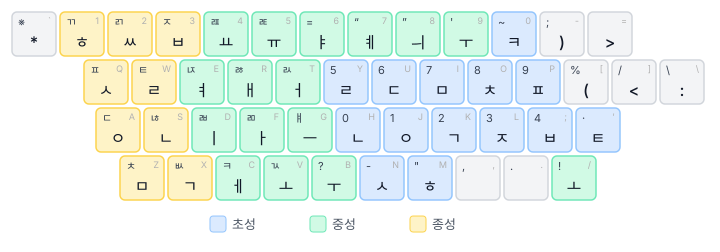

키보드 레이아웃
Ongeul은 세 가지 한글 키보드 레이아웃을 지원합니다. 설정에서 원하는 레이아웃을 선택할 수 있습니다.
두벌식 표준
가장 널리 사용되는 한글 키보드 배열입니다.

- 자음과 모음 두 벌로 구성
- 왼손 자음, 오른손 모음 배치
- Shift로 쌍자음 입력 (ㄱ → ㄲ, ㄷ → ㄸ 등)
- 겹받침 자동 조합: ㄱ+ㅅ=ㄳ, ㄹ+ㄱ=ㄺ 등
- 겹모음 자동 조합: ㅗ+ㅏ=ㅘ, ㅜ+ㅓ=ㅝ 등
- 종성 뒤 모음 입력 시 자동 분리: 간+ㅕ → 가+녀
조합 과정
두벌식은 6단계 상태 머신으로 한글을 조합합니다.
- 초성 입력
- 중성 입력
- 겹중성 입력 (해당 시)
- 종성 입력
- 겹종성 입력 (해당 시)
- 다음 음절로 이동 (종성 분리 포함)
백스페이스를 누르면 조합 단계가 하나씩 취소됩니다.
세벌식 390
초성, 중성, 종성을 각각 다른 키에 배치한 세벌식 자판입니다.
- 초성(왼쪽), 중성(오른쪽), 종성(왼쪽 아래) 분리 배치
- 숫자열에 특수 문자 리매핑
- Shift 없이 대부분의 한글 입력 가능
세벌식 최종
세벌식 최종 자판은 390 배열을 더 세밀하게 조정한 배열입니다.

- 390과 유사한 초/중/종 분리 배치
- 추가 특수 기호 및 인용부호 지원
- 숫자열 배치 차이
레이아웃 정의
모든 레이아웃은 JSON5 형식으로 정의되어 있어 구조를 확인하거나 기존 레이아웃의 키 배치를 편집할 수 있습니다.
레이아웃 파일 위치: ongeul-automata/layouts/
2-standard.json5— 두벌식 표준3-390.json5— 세벌식 3903-final.json5— 세벌식 최종
새로운 자판 레이아웃의 추가를 원하시면 GitHub Issues에 등록해 주세요.